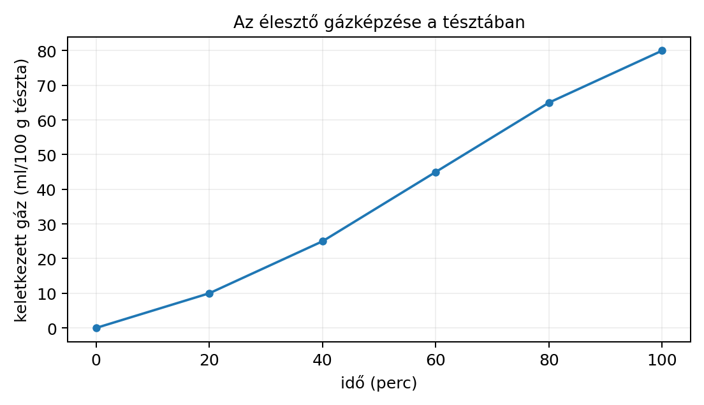

Tegyük fel, hogy hajnali műszakban a pék azt veszi észre, hogy a friss préselt élesztőből elfogyott a készlet, és a hűtőben csak szárított élesztő van. A tésztához 80 g friss élesztő kellene. Ha a pék ugyanúgy 80 g-ot mér a szárítottból, a tészta túl gyorsan kel, savanyú lesz, a kenyér héja pedig kellemetlen, élesztős szagú lesz. Ha viszont túl keveset ad, a tészta „ül”, a termék kis térfogatú, tömör marad. Az élesztő tehát nem egyszerűen egy por vagy kocka: a különböző típusok élősejt-tartalma és viselkedése eltérő, ezért az adagolást és a helyettesítést pontosan kell számolni.
Az élesztő a tésztában nem azonnal, hanem fokozatosan kezd el gázt termelni. A lentebbi görbén látható, hogy azonos tésztahőmérséklet mellett a gázfejlődés először gyorsul, majd lassul, ahogy az élesztő a rendelkezésre álló cukrot fogyasztja, és a tészta szerkezete is változik.

Ez azt jelenti, hogy az élesztő mennyiségét a kelesztési idővel és a hőmérséklettel össze kell hangolni. Ha több idő áll rendelkezésre, kevesebb élesztő is elég; ha gyorsan kell dolgozni, több élesztő kell, de csak ésszerű határig.
Definíció. Az élesztő egysejtű gombák (többnyire a Saccharomyces cerevisiae faj) életképes sejtjeiből álló biológiai lazítóanyag. A tésztában a cukrot etanollá és szén-dioxiddá bontja; a szén-dioxid gázbuborékjai lazítják a tésztát.
Az élesztőnek három, technológiailag fontos hatása van:
Gázképzés – az erjedés során keletkező CO2 a tészta gluténhálóját feszíti, és a termék térfogatát, bélzetének lyukacsosságát adja. A gázfejlődés sebessége függ a hőmérséklettől, az élesztő mennyiségétől, a cukortartalomtól, a sómennyiségtől és a tészta víztartalmától.
Aromaképzés – az erjedés melléktermékei (alkoholok, szerves savak, észterek, aldehidek) adják a kenyér és a péksütemény jellegzetes, kellemes illatát és ízét. Túl sok élesztő vagy túl hosszú erjedés kellemetlen, savanykás-élesztős aromát eredményez.
Sikér-érlelés – az élesztő anyagcseréje során keletkező savak és enzimek lazítják, nyújthatóbbá teszik a sikért, javítják a tészta gázvisszatartó képességét. Ezért az azonos összetételű, de élesztő nélkül kevert tésztából sütött termék merev, tömör és rossz bélzetű lesz.
Összefüggés. A gázképzés és a tésztaérés szorosan összefügg: ha az élesztő túl gyorsan termel gázt, a sikér nem bírja megtartani, a buborékok összeolvadnak, a tészta „összeesik”. Ezért az élesztőadagot nemcsak a kelesztési időhöz, hanem a liszt minőségéhez és a tészta keménységéhez is igazítani kell.
Friss préselt élesztő. Nedves, kocka vagy tömb alakú élesztő, körülbelül 28–35 m/m% szárazanyag-tartalommal (ellenőrizendő: a gyártói adatlap). Hűtve, 0–4 °C-on rövid ideig tárolható, és gyorsan veszít az aktivitásából, ha meleg helyen áll vagy kiszárad. Használat előtt vízben vagy tejben elkeverhető, de friss állapotban közvetlenül a liszthez is adható, ha a dagasztás megfelelően intenzív.
Aktív szárított élesztő. Szárított, granulált élesztő, amelynek sejtjei nyugalmi állapotban vannak. A friss élesztő felfuttatásához 25–30 °C-os folyadék kell (lásd Lazítóanyagok és a sütőélesztő); a szárított élesztő rehidratálásához a gyártó által előírt, jellemzően kb. 30–35 °C-os (a gyártói adatlap szerint legfeljebb kb. 38–40 °C), cukros víz vagy tej kell (ellenőrizendő: gyártói adatlap); az aktiválás 5–10 perc, hogy a sejtek vízhez jussanak és meginduljon az anyagcseréjük. A friss élesztőnél kisebb tömegű adagolás elegendő, mert a szárítással a szárazanyag-tartalom magasabb. Ha aktiválás nélkül közvetlenül a lisztbe keverik, a sejtek lassabban rehidratálódnak, és a kelesztés vontatottá válik.
Instant élesztő. Finom por vagy apró granula, amelyet úgy állítottak elő, hogy aktiválás nélkül, közvetlenül a liszthez keverhető legyen. A gyakorlatban gyakran az aktív szárítottnál is kisebb mennyiség elég, mert a sejtek gyorsan rehidratálódnak. Az instant élesztőt is óvni kell a közvetlen sóval vagy cukorral való tartós érintkezéstől, mert a lokálisan magas ozmotikus koncentráció károsíthatja a sejteket.
Folyékony élesztő. Szuszpenzió formában szállított, hűtve tárolandó élesztő. Nagyüzemi, automatizált adagolásra alkalmas. Adagolása a berendezés kalibrálása szerint történik, ezért a mennyiséget mindig a technológiai utasítás és a gyártói adatlap alapján kell beállítani.
Szabály. Az élesztőtípusok nem cserélhetők tömegre azonosan. A helyettesítéshez mindig a gyártói adatlapon megadott szorzótényezőt kell használni. A szorzó azt mutatja meg, hogy 1 g friss préselt élesztő helyett hány gramm adott típusú élesztőt kell betenni.
Összefüggés. Jelölje a friss préselt élesztő tömegét, a másik típus tömegét, és a helyettesítési tényezőt. Ekkor
A szorzó tanulási példaként az aktív szárított élesztőre gyakran 0,4–0,5, az instantra 0,3–0,4 közötti érték lehet, de ez gyártónként és termékenként változik. (ellenőrizendő: a felhasznált élesztő gyártói adatlapja és a üzemi technológiai lap.) Ha fordítva számolunk, akkor a friss élesztő tömege:
A szorzó tehát az egyenes arányosság elvén alapul: ugyanazt az erjesztési teljesítményt különböző tömegű élesztőtípusokkal érjük el.
Példa. A tésztához 80 g friss élesztő kell. Mennyi aktív szárított élesztőt mérjünk be, ha a gyártói szorzó ?
Számítás:
Tehát 36 g aktív szárított élesztőt kell használni, és azt a gyártói utasítás szerint aktiválni kell.
Számítás. Egy másik műszakban instant élesztőt használunk, és a recept szerint 50 g friss élesztőre van szükség. Mennyi instant élesztőt mérjünk, ha ?
Adott: , . Keresett: .
Képlet: .
Behelyettesítés: .
Ellenőrzés: mivel az instant élesztő hatékonyabb, a tömeg kisebb, mint a frissé. A 16,5 g nagyságrendje illik a gyakorlathoz. Az eredményt visszaszámolva , tehát a helyettesítés konzisztens. ∎
Számítás. Az üzemben csak aktív szárított élesztő áll rendelkezésre, és a receptben 120 g friss élesztő szerepel. Mennyi szárított élesztő kell, ha ?
Adott: , . Keresett: .
Képlet: .
Behelyettesítés: .
Ellenőrzés: a szárított típusnál a tömeg a friss 40%-a, ezért 120 g friss helyett 48 g elegendő. A 48 g a receptben szereplő lisztmennyiséghez képest jellemzően a liszt 1,0–2,0%-a, ha a friss élesztő 2,5–5% volt (0,40 × 2,5% = 1,0%; 0,40 × 5% = 2,0%). Ez a nagyságrend elfogadható. ∎
Gyakorlat. Aktív szárított élesztő esetén a betanított dolgozó az alábbi lépéseket követi:
Figyelem. Az aktiváló folyadék hőmérséklete ne haladja meg a gyártói adatlap szerinti felső határt (legfeljebb kb. 38–40 °C), mert a magasabb hőmérséklet károsíthatja az élesztősejteket. Tilos forró vizet használni, még akkor is, ha a dagasztóvíz hőmérsékletét utóbb hideg vízzel korrigáljuk. (ellenőrizendő: a gyártói adatlap.)
A tészta hőmérséklete alapvetően befolyásolja az erjedés sebességét. Magasabb hőmérsékleten a gázképzés gyorsabb, ezért ugyanahhoz a kelesztési időhöz kevesebb élesztő is elég; alacsonyabb hőmérsékleten több élesztő vagy hosszabb idő szükséges.
Összefüggés. A gyakorlatban használt egyszerűsített, lineáris tanulási modell szerint a tésztahőmérséklet 1 °C-os csökkenése körülbelül 10–15%-kal lassítja az erjedést: °C csökkenésnél az élesztőadag -szeresére nő, ha a kelesztési időt változatlanul akarjuk tartani. A modell csak néhány °C-os eltérésre használható. Ez a modell tájékoztató jellegű; a pontos értéket mindig a technológiai lap és az üzemi próbák adják meg. (ellenőrizendő: üzemi technológiai lap.)
Példa. Egy 5%-os friss élesztőadagú tésztát 28 °C tésztahőmérséklettel kelesztünk 60 percig. Ha a tésztahőmérséklet csak 25 °C, és ugyanolyan 60 perces időt akarunk tartani, hány százalékra növeljük az élesztőt?
A hőmérséklet-csökkenés: . Tételezzük fel, hogy 1 °C csökkenés 12%-os élesztőadag-növelést indokol. A növelési tényező . Az új adag: . Tehát a friss élesztőt a lisztre vetítve körülbelül 6,8%-ra kell emelni, hogy a kelesztési idő megmaradjon. Ez a számítás tájékoztató; a valós értéket próbasütéssel ellenőrizni kell.
Definíció. Az ozmotolerancia az élesztő azon képessége, hogy magas cukor- vagy sókoncentráció mellett is szaporodni és erjedni tudjon. A cukor megköti a vizet, csökkenti a tészta vízaktivitását, így az élesztősejtek nehezebben jutnak vízhez.
Cukros tésztákban (például foszlós kalács, briós, kuglóf) a cukor mennyisége a lisztre vetítve gyakran 10–25% közötti. Ilyenkor az élesztő lassabban dolgozik, ezért:
Példa. Egy kalácstésztában a cukor lisztre vetített aránya 15%. A sovány tésztához elegendő lenne 4% friss élesztő, de a magas cukortartalom miatt az élesztő aktivitása csökken. Az üzemi tapasztalat szerint ilyenkor az élesztőadagot 10–20%-kal emelni kell. Ha 15%-os növelést választunk, az új adag: . Tehát a lisztre vetítve 4,6% friss élesztőt kell betenni. (ellenőrizendő: üzemi technológiai lap és gyártói ajánlás.)
Egy kis pékségben a hétvégi foszlós kalács gyártásakor a szokásos friss élesztő helyett a raktáros instant élesztőt hozott. A pék rutinból ugyanazt a tömeget mérte be, mint a friss élesztőnél szokta (a liszt 5%-a). A tészta a dagasztóban hamar felmelegedett, a kelesztőben 45 perc alatt túlkelt, a formákból „kifutott”. A sütőbe helyezés után a kalácsok héja gyorsan megpirult, de a bélzetük nyers maradt, és az ízük élesztős-savanyú volt. A túlkelt, gyenge szerkezetű tészta héja hamar megszínesedett, ezért a pék a szín alapján túl korán szedte ki őket. A tételt maghőmérővel ellenőrizték: a bél nem érte el a kalácsra előírt értéket (technológiai lap szerint kb. 90–96 °C, ellenőrizendő), ezért a teljes tételt elkülönítették, a termék sorsáról a minőségbiztosítás döntött (selejtezés), és a döntést dokumentálták. A hibát az okozta, hogy nem alkalmazták az instant élesztőre vonatkozó szorzót: 5% friss helyett csak körülbelül instant kellett volna. A tanulság: amikor élesztőtípus váltás történik, a receptet mindig újra kell számolni, és az első tételt próbasütéssel ellenőrizni.
Az élesztő átvételekor és felhasználása előtt ellenőrizzük:
A tésztában az élesztő megfelelő működését a kelesztés során a térfogatnövekedés, a felület rugalmassága és a kellemes erjedési illat jelzi. Ha a tészta rövid idő alatt túlzottan kel, vagy savanyú, acetonos szagú, az élesztő túladagolásra vagy nem megfelelő típusra utal.
1. hiba: A szárított élesztő tömege megegyezik a
frissével.
Tünet: túlzottan gyors kelés, savanyú aroma, összeeső tészta.
Ok: a szorzótényező alkalmazásának elmulasztása.
Megelőzés: a helyettesítési számítást mindig a gyártói adatlapról vett
szorzóval végezzük el.
2. hiba: Az aktív szárított élesztőt hideg vízbe keverik,
vagy forró folyadékot használnak.
Tünet: a tészta nem kel meg rendesen, vagy az élesztő elhal.
Ok: a hideg vízben a rehidratáció lassú, a forró vízben a sejtek
károsodnak.
Megelőzés: az aktiváláshoz mindig kézmeleg, kb. 30–35 °C-os folyadékot
használunk, és a hőmérsékletet megmérjük.
3. hiba: Cukros tésztában ugyanolyan élesztőmennyiséget
használnak, mint sovány tésztában.
Tünet: a tészta lassan kel, a termék térfogata kicsi, a bélzet
tömör.
Ok: a magas cukorkoncentráció csökkenti a vízaktivitást, az élesztő
aktivitása visszaesik.
Megelőzés: a cukros tésztákhoz az üzemi technológiai lap szerint nagyobb
élesztőadagot vagy ozmotoleráns törzset használunk.
1. feladat (A)
Egy recept 100 kg liszthez 3 kg friss préselt élesztőt ír elő. Mennyi
aktív szárított élesztőt kell betenni, ha a gyártói szorzó
?
2. feladat (A)
Egy pékségben instant élesztőből 18 g-ot használtak fel. Mennyi friss
préselt élesztőnek felel meg ez, ha
?
3. feladat (B)
Egy foszlós kalács receptúrájában a liszt 5%-a friss élesztő. A gyártó
instant élesztőt szállít, amelyre
.
A tészta lisztmennyisége 40 kg. Hány kg instant élesztőt kell bemérni,
és hány kg friss élesztőt vált ki?
4. feladat (B)
Egy tészta dagasztóvíz-hőmérsékletét technikai okból 26 °C-ról 24 °C-ra
kell csökkenteni. Az eredeti friss élesztőadag a lisztre vetítve 4%. Az
üzemi modell szerint 1 °C hőmérséklet-csökkenés 12% élesztőadag-növelést
igényel. Mennyi legyen az új friss élesztőadag százalékban?
5. feladat (C)
Egy pék aktív szárított élesztőt akar használni, de a gyártói adatlapon
csak annyi áll: „1 tasak (7 g) instant élesztő 25 g friss élesztőnek
felel meg”. A pék aktív szárított élesztőt szeretne, amelyre a gyártó
-t
ad meg. Mennyi aktív szárított élesztőt kell bemérnie, ha a receptben 35
g friss élesztő szerepel? Ellenőrizd a logikát: miért nem elég az
instant adatot használni?
6. feladat (D)
Egy üzem reggeli műszakjában a tésztahőmérséklet 27 °C, a tésztához 2,8%
friss élesztőt adnak, és a kelési idő 70 perc. Délután a
tésztahőmérséklet csak 23 °C-ra állítható be, de a kelési idő nem
növelhető. Az üzemi adat szerint 1 °C csökkenés 13% élesztőadag-növelést
igényel. Hány százalék friss élesztőt kell a lisztre vetítve adagolni,
és hány kg friss élesztőt kell bemérni, ha a dagasztás 50 kg liszttel
történik?
Önellenőrzés – válaszok
1. feladat (A)
Adott:
,
.
Keresett:
.
Képlet:
.
Behelyettesítés:
.
Ellenőrzés: a szárított tömeg a friss 45%-a, ami megfelel a gyakorlatban
használt tartománynak. ∎
2. feladat (A)
Adott:
,
.
Keresett:
.
Képlet:
.
Behelyettesítés:
.
Ellenőrzés: visszaszámolva
,
tehát a számítás helyes. ∎
3. feladat (B)
Adott: liszt = 40 kg, friss élesztő 5%,
.
A friss élesztő tömege:
.
Az instant élesztő:
.
Ellenőrzés: 640 g instant élesztő 40 kg liszthez a liszt 1,6%-a, ami
jellemző instant adag. A friss 5% helyett 1,6% instant reális. ∎
4. feladat (B)
Hőmérséklet-csökkenés:
.
Növelési tényező:
.
Új adag:
.
Ellenőrzés: az új adag nagyobb, mint az eredeti, és a növekedés 24%-os,
ami 2 °C csökkenésnél reális. ∎
5. feladat (C)
Az instant adatból kiderül: 7 g instant = 25 g friss, tehát
.
A recepthez 35 g friss kell. Az aktív szárítottra a gyártói szorzó
.
.
Miért nem elég az instant adat? Mert az aktív szárított és az instant
élesztő szorzója különböző; az aktív szárított esetén nagyobb tömeg
kell, mint instantból, mert az instant hatékonyabb. Az instant szorzóval
tévesen
-ot
adnánk, ami kevés lenne. ∎
6. feladat (D)
Hőmérséklet-csökkenés:
.
Növelési tényező:
.
Új százalékos adag:
.
Lisztmennyiség: 50 kg.
Bemérendő friss élesztő:
.
Ellenőrzés: a hőmérséklet-csökkenés jelentős, ezért az élesztőadag
2,8%-ról 4,26%-ra emelése indokolt. A bemért mennyiség 2,13 kg, ami 50
kg liszthez viszonyítva reális. ∎
Az élesztő biológiai lazítóanyag, amely gázképzéssel lazítja a tésztát, aromákat képez, és érleli a sikért. A friss préselt, aktív szárított, instant és folyékony élesztő élősejt- és szárazanyag-tartalma eltérő, ezért a helyettesítést mindig a gyártói adatlapról vett szorzóval kell számolni: . Aktív szárított élesztőt kézmeleg, kb. 30–35 °C-os folyadékban aktiválunk; instant élesztő közvetlenül a liszthez keverhető. A tésztahőmérséklet csökkenésekor az élesztőadagot növelni kell, mert az erjedés lassul. Cukros tésztában az ozmotikus hatás miatt több élesztő vagy ozmotoleráns törzs szükséges. A só és a cukor ne érintkezzen közvetlenül az élesztővel. Ezeket a szabályokat alkalmazzuk az A só és a sóoldat alfejezetben az élesztő-só kölcsönhatásnál, a Nyersanyagok előkészítő műveletei alfejezetben az aktiválás és adagolás során, valamint a Nyersanyagok helyettesítésének számításai alfejezetben az általános helyettesítési logika részeként.
Az alfejezet az élesztő technológiai tulajdonságait és a helyettesítési számításokat a sütőipari szakmai gyakorlat általánosan ismert összefüggései alapján tárgyalja. A friss, aktív szárított, instant és folyékony élesztő jellemzői, valamint a helyettesítési szorzók minden esetben gyártó- és termékfüggők, ezért a kiadás előtt ellenőrizendők a konkrét gyártói adatlapok és a Magyar Élelmiszerkönyv sütőipari termékekre vonatkozó előírásai (ellenőrizendő: aktuális Élelmiszerkönyv-előírások). A hőmérséklet-élesztőmennyiség modell és az ozmotoleranciára vonatkozó százalékos növelések tanulási példák, nem mért üzemi adatok; a valós értékeket minden üzemben próbasütéssel kell meghatározni. A 30–35 °C-os aktiválási hőmérséklet szintén tájékoztató jellegű, a gyártói utasítást mindig be kell tartani.